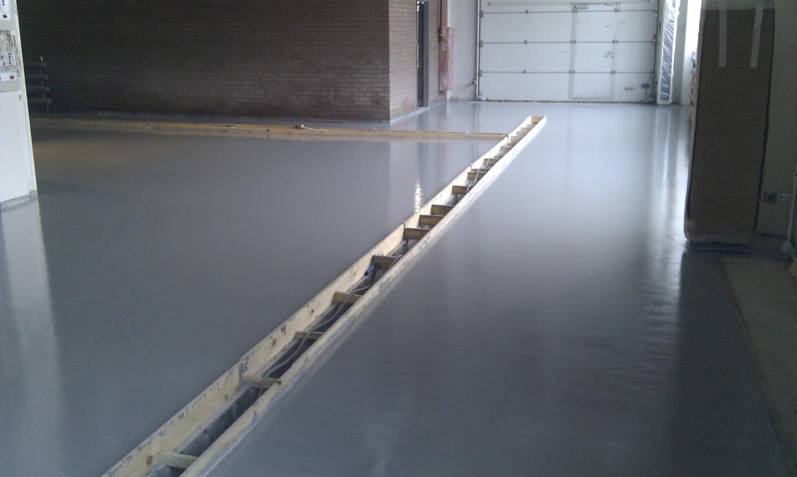

Флортек
Технология Качество Надежность
О компании
ООО «Флортек» была основана в 2002 году. Основатели компании в течение многих лет обучались и набирали опыт по производству промышленных полов и цементно-песчаных стяжек в различных фирмах России, Германии и Швейцарии. ООО «Флортек» располагает современным эффективным строительным оборудованием и автотранспортными средствами, обеспечивающими бесперебойное выполнение работ, а главное, качественный конечный продукт — цементно—песчаные стяжки. Мы придаем огромное значение приобретению, обработке и предоставлению нашим Клиентам только высококачественных материалов. Все материалы и добавки, используемые и перерабатываемые нами, экологически безопасны и соответствуют всем требованиям, установленным в Российской Федерации. В связи с этим достаточно упомянуть такого известного нашего поставщикa, как фирма, Зика (Sika), — очень авторитетного и старейшего европейского производителя стройматериалов, технологического лидера в области производства различных полимерных материалов.
- Выполненных проектов: 279
- Объем штата: 53 сотрудника
Полусухая стяжка

Полусухая цементно-песчаная стяжка пола — современная технология, заключающаяся в создании и укладке смеси с минимально необходимым для связывания количеством жидкости в растворе (всего примерно 40 литров на кубический метр).
Цементно-песчаная тяжка полов − это необходимый этап строительных работ. Любая ц/п стяжка пола выполняет сразу несколько функций, а именно: выравнивание поверхности пола; создание основы под напольное покрытие; служит полом в производственных помещениях; Конструктивно цементно-песчаная стяжка пола может быть: связанной с основанием;
Эпоксидные наливные полы

Наливные полы приобретают все большую популярность в промышленном и гражданском строительстве. Владельцу новостройки, будь то фабрика или больница, хотелось бы, чтобы новые полы были и красивыми, и прочными, и легкими в уборке. Бетонная стяжка, сколь бы хорошей она ни была, в большинстве случаев не соответствует требованиям, предъявляемым к финишным покрытиям. В этом случае используются самовыравнивающиеся полимерные наливные полы.
Наливные полы являются бесшовными (в некоторых случаях это одно из основных условий Заказчика). Именно такие полы могут использоваться там, где предъявляются высокие требования к гигиене и чистоте — их легко убирать.
Оборудование и инструменты

•Шлифовальная машина «Сплитстоун»
(Производительность 17 м2/час
Мощность 5/5 кВт);
•Профессиональный пылесос “Nilfisk SOL 3000”
(Производительность 8200 л/м
Мощность 3 кВт);
•Отрезная машина “Hilti”;
•Плоский шпатель;
•Короткошерстный валик;
•Кисть малярная;
•Весы электронные «Масса-К»;
•Измеритель влажности МГ -4-В;
•Башмаки для передвижения по массе.
Требования к бетонному основанию

Основание под устройство цементно-песчаной стяжки не должно иметь наплывов бетона, не обеспечивающих минимальную толщину стяжки — 30 мм. В основании под устройство цементно-песчаной стяжки не должно быть значительных раковин, выступающей арматуры. На основании не должно быть стоячей воды и строительного мусора. В помещениях температура окружающего воздуха должна быть в пределах от +5 ºС до +30 º С. (оптимальная температура около +20 º С.) Влажность воздуха 80%. Свежеуложенную цементно-песчаную стяжку необходимо защищать от сквозняков. Подготовка основания и помещений осуществляется Заказчиком.
Технология производства работ

Рецептура раствора.
На подготовленное основание наносится клеевой раствор:
•Песок — 100 кг;
•Цемент — 75 кг;
•Клей — 25 л;
•Вода — 30 л;
Состав раствора для цементно-песчаной стяжки из расчета на 1мЗ, в зависимости от заданной марки
цементно-песчаной стяжки, определяется следующим соотношениями компонентов:
•Например, для раствора М300:
•Песок — 670-690 кг;
•Фибрин — 1,00 кг;
•Вода — 100-120 л;
•Цемент — 350 кг;
Наша группа ВКонтакте
Там вы можете оформить оценку стоимости вашей работы